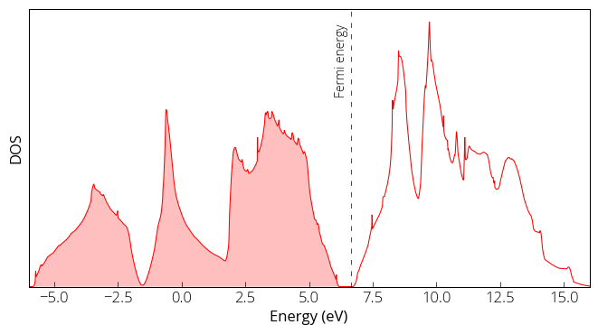

DOS calculation
Before we can run the Density of States (DOS) calculation, we need to
- Perform fixed-ion self consistent filed (scf) calculation.
- Fix the parameters and run non-self consistent field (nscf) calculation with denser k-point grid.
I have created a new input file (si.scf-dos.in) which is very much same as our previous scf input file except some parameters are modified. You can find all the input files in my GitHub repository. We used the lattice constant value that we obtained from the relaxation calculation. We should not directly use the experimental/real lattice constant value. Depending on the method and pseudo-potential, it might result stress in the system. We have increased the ecutwfc to have better precision. We run the scf calculation:
pw.x < si.scf-dos.in > si.scf-dos.out
Next, we have prepared the input file for the nscf calculation. Where is have added occupations in the &system card as tetrahedra (suitable for DOS calculation). We have increased the number of k-points to 12 × 12 × 12 with automatic option. Also specify nosym = .TRUE. to avoid generation of additional k-points in low symmetry cases. outdir and prefix must be same as in scf step, some of the inputs and output are read from previous step.
pw.x < si.nscf-dos.in > si.nscf-dos.out
Now our final step is to calculate the density of states. The DOS input file as follows:
&DOS
prefix='silicon',
outdir='./tmp/',
fildos='si.dos.dat',
emin=-9.0,
emax=16.0
/
We run:
dos.x < si.dos.in > si.dos.out
The DOS data in the si.dos.dat file that we specified in our input file. We can plot the DOS:
